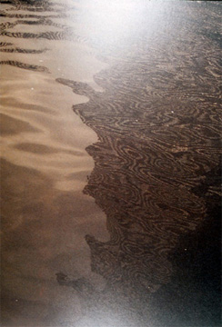

| |
In the 1960's in Paris, a group of artists calling themselves
the Situationist International invented a term for their politicized
explorations of the urban environment - psychogeography, which
Guy Debord defines as “the study of the specific effects
of the geographical environment, consciously organized or not,
on the emotions and behavior of individuals.”[1] This
term refers to the psychological characteristics of landscape
- the impression it makes on us, an impression affected and
complicated by the landscape’s history and inhabitants.
The SI left behind few physical traces of their experiments
other than maps, texts, and some grainy photographs, but their
critique of the spectacle inherent in consumer culture and their
attempts to find a way to circumvent it in a real and personal
interaction with the streets and population of Paris remains
their artistic and political legacy.
|
Fig. 1. Roni Horn,
Another Water. Courtesy Scalo Press, Zurich-Berlin-New
York, distributed by D.A.P. |
Although contemporary artist Roni Horn’s
work does not bear any relation formally to the fragments left
behind by the SI, in her absorbing work, Another Water (The
River Thames, for Example) (2000), Horn creates the experience
of a latter day psychogeography, one that maps the vicissitudes
of our time in a beautiful and disturbing manner. Viewing Horn’s
photographs and reading her text, the audience can travel on
a psychogeographic journey that provides both a critique of
and a solution to the deathly consumerism of contemporary culture.
This work actually has two forms: Another
Water (The River Thames, for Example) is the title of an
artist's book while Still Water (The River Thames, for Example)
refers to a series of exhibition photographs. The latter are
sometimes shown in their entirety, as at SITE Santa Fe in 2000-2001,
or in a smaller format; for example, only four were displayed
in 2002 in the MoMA QNS Tempo show. The exhibition differs somewhat
from the book in scale and aesthetic effect. The photographs
in the exhibit consist of large close-ups of moving water (roughly
30 x 41 inches), and the images of water are speckled with footnotes
which match numbers in the tiny black text running along the
white "footer" just underneath the photograph [Fig.
1].
In the more intimately scaled paperback book,
no footnotes appear on the surface of the water and each photograph
is split by the central binding of the book. The paper is matte
and unframed, and the photographs extend to the edges of the
page except along the bottom. The footnotes begin on the cover
and wrap around into the book itself, ending mid-sentence on
the back cover, thus creating a book with no end. The pictorial
form of the book is therefore consonant with its physical form;
together they reinforce the visceral impression of the endlessly
running river [Fig. 2].
|
Fig. 2. Roni Horn,
Another Water, cover. Courtesy Scalo Press, Zurich-Berlin-New
York, distributed by D.A.P. |
The flow of the book is interrupted, however,
by seven texts describing suicides in the form of police reports
or obituaries. Printed on the right side of the page, the paragraphs
of text face the white, blank left side, in stark contrast to
the photographs, creating a full stop in the otherwise seamless
page-flipping [Fig. 3].
These documents of suicides add a fictional
note, since it is hard to believe even the British police or
newspapers are eccentric enough to report such details as: "lavender
sweater with scalloped white edging, black polyester knit leggings."
There is no citation anywhere in the publishing information
acknowledging police reports or permission from newspapers,
so it can probably be assumed that they are indeed falsified.
This element was not present in the Tempo or SITE Santa Fe exhibitions,
and changes the mood of the work.
In fact, the obituaries make clear the subtext
of Another Water: the attraction of the Thames River
for suicides. Footnote: #397 reads:
(Drowning is a more common suicide here than
in the States. In the States it's mostly shooting. Maybe it's
because you can't get guns here. But maybe it is also the quality
of the water. It must be, because foreigners come to drown themselves
in it).
|
Fig. 3. Roni Horn,
Another Water. Courtesy Scalo Press, Zurich-Berlin-New
York, distributed by D.A.P. |
Horn documents somewhat arbitrary factual and
mostly impersonal information on the reports, so that the suicides
are known only by their names, their personal effects and what
they told the neighbors the week before. (Their motives or the
effects of their actions are not mentioned, and Horn does not
speculate about them - although the work as a whole can be considered
an indirect speculation on the reason for their deaths). The
most ordinary, normal-seeming people are documented in Another
Water, as well as people in more unusual circumstances. Most
striking perhaps is how prepared many of the suicides are -
one man strapped his bike to his chest, other people taped their
possessions to their bodies in cellophane bags. One particularly
upsetting footnote (#158) describes a woman who drove her Ford
Fiesta into the river with her Irish Setter, the windows closed,
the door locked and the dog's leash wrapped around her hand.
Horn’s apparently morbid interest in this facet of the
river reflects her underlying theme - the question of meaningful
existence in contemporary society.
In the footnotes underneath the water, Horn
refers to many American and British cultural and literary sources,
including the poetry of Emily Dickinson and Wallace Stevens,
the stories of Edgar Allen Poe, Raymond Carver, and Flannery
O'Connor, the novels of James Joyce, William Faulkner, Joseph
Conrad, and Charles Dickens. She usually quotes a line, such
as "#47 (Between grief and nothing, I will take grief.)"
which refers to "#48 From the novel The Wild Palms by William
Faulkner, 1939." The text mentions numerous popular songs
having to do with the river and death (Neil Young, Hank Williams,
and The Temptations, to name a few), and various filmic moments,
such as when the protagonist Alex considers suicide in A
Clockwork Orange by Stanley Kubrick. Horn also refers to
philosopher Martin Heidegger's 1967 essay "What is a thing?"
[2], a meditation on the nature of existence. Critic Meg O'Rourke
has commented that Horn's art "does not come out of a sculptural
tradition so much as an intellectual history that philosophically
embraces the world and its disciplines." [3] Horn's many
references to other sources create a web of associations and
meanings, cumulatively adding to the effect of her art by engaging
with a vast cultural array of ideas.
The unconventional use of footnotes in Another
Water also recalls the fiction of David Foster Wallace, whose
best selling 1996 novel Infinite Jest centers around
a father's suicide. The notes lend an air of scholarly reassurance,
functioning at times in a short series related by a theme which
ends after a number of notes, and at others in discrete thoughts,
such as "#4: Thinking about water is thinking about the
future - or just a future" or "#93 It's hard to talk
about water without talking about oneself." They refer
to various historical and sociological aspects of the Thames,
such as the "jumpers," Dead Man's Ledge (a place where
bodies washed up in the nineteenth century before it was blocked),
the many bridges, the pollution, and the birds.
The importance of language and the appropriation
of literary and other cultural sources has a history in Horn's
work. After graduating from the Yale MFA program in 1978, the
New York-based artist began her career making conceptual, machine-made
metal sculptures, quickly moving to pieces using Emily Dickinson's
poetry and quotes from Simone Weil. In the 1980's Horn exhibited
drawings of sentences, made from cut and pasted fragments of
letters, and in the 1990's she began to experiment with photography,
creating a number of artist's books in the series To Place:
Ísland. These works, which document geologic and
social realities intrinsic only to Iceland, reveal Horn's interest
in the specifics of geographic location, an aspect also present
in The River Thames. Horn's Iceland series relies heavily on
this "site-dependency," exploring various aspects
of that country’s geologic oddities, such as its thermal
waters or its unusual land formations, as metaphors for a primal,
individual experience of nature.
Horn has not moved away from geography nor
geology in Another Water, but her photographs here
disavow a specific sense of place, extending the idea of landscape
into a psychogeographic terrain. She has cropped out any distinguishing
features of the river, such as its banks and bridges, showing
only close-ups of the water itself. The only reflection Horn
ever captures in the river photographs are abstract patterns
created by the rippled surface of the water. Usually, in walking
along or looking at a river, as Horn invites us to imagine we
are doing, one is aware of the surrounding environment; the
weather, the shores, buildings, human and animal presence, the
sound of the river. Horn mentions several of these elements
- she compares the noise of the river to the sound of the trees
in the park scene from the movie Blow-Up and she has
several passages referring to the bridges ("So many bridges...invitingly
scaled - a virtual forest" #645); but they remain external
to the direct visual impact.
Despite the increasing use of photography in
her work, Horn has said that she does not consider herself a
photographer per se. Her photographs usually rely on the indexical
nature of the photograph; the fact that this place or person
once existed and therefore that the photograph is a referent
of the real.[4] However, in Another Water, the coordinates
of time and space are absent, leaving the viewer to contemplate
a metaphor of universality.
Because of the timeless, placeless quality of the photographs,
Horn's geographical location and temporal setting is created
instead by the text. The only landmarks, literally on the exhibition
photos and figuratively in the text, are the footnotes: "#466
These notes, rootless, flowing one into another, are tiny landmarks
of relation." Although she could be talking about any river,
any water (footnote #807 "Are you wondering if I'm talking
about the Ganges? Or the Yangtze? Or even the Congo?"),
she discounts her native, New York Hudson (#175 "The Hudson
is black, too, but it's not dark"). The Thames in particular
calls forth these speculations. This focus on the uniqueness
of a particular geographic area is part of Horn's ongoing project
to retrieve the specificity of place so easily lost in contemporary
life. It points to a shift away from the idealism and romanticism
Horn has evinced for Iceland to the more sordid reality of Anglo-American
life.
Although on the one hand Horn encourages us
to imagine the sound of the river or the look of the bridges,
she also asks us to view the photographs not as images of water
but in their object-ness, as literal paper. Her text causes
us to consider the notes not as a fictive narrative presented
in its totality but as a possible site for interaction with
the author: "What about this note? Do you like it?"
asks footnote #287. "I could have moved it to another page,
but that might have changed its content." Horn requires
the viewer to become aware of his or her actions and interactions
with the work, while calling up associations of other works
and other ideas.
Another Water takes Horn's use of
photography and interest with text and literary and cultural
references in a new direction from most of her previous work,
which reviewers have called "austere and cerebral,"[5]
or "laconic and seemingly hermetic." [6] But in Another
Water, ideas jump to life and the viewer is almost overwhelmed
by the intimate, confiding presence expressed through the text.
The work speaks to us, as viewers; it engages us with questions
and directs us with its syntax and references. Both text and
photographs consciously play with the conventions of traditional
writing and photography. Sometimes they are synchronized, producing
together the effect of staring at water and letting one's thoughts
run and drift. On other pages, the photographs contradict the
text, such as when Horn discusses all of the "eensie, weensie"
bodies of babies that must be in the Thames, creating the fantastic
vision of a primordial soup. In contrast, the water appears
clean, clear and entirely innocent. Horn also addresses the
complexities of photography and her use of it in the text. A
series of footnotes runs as follows:
#124 This photograph is an image of a moment
on the Thames. It is also a moment similar to other moments
of moving water and especially moments of rapidly moving water
that were hardly visible...You feel like you've seen it before..
But you haven't, what you've actually seen is a slur: the form
a river often takes in real time.
#125 When you photograph water you strip it of its form: of
its restless, liquid reality.
#126 When you photograph water you give it an image that in
essential ways bears no likeness to water.
#127 When you photograph water you speak in graphic terms about
something that has no graphic aspect.
In these footnotes, Horn reminds the viewer
to be aware of the representational capacity of photography
by pointing out all of the aspects of a river that photography
cannot represent: its temporal quality of constant change, its
wetness and its motion. Through words, she reminds us of the
quality of water's very "being," which can only be
imagined and not actualized, reproducible neither by words nor
by images.
Critic Frances Richard has said of Horn's sculpture
that it "grapples with the maddening and/or ecstatic drift
that plagues representational systems, the tenuous connection
between extant objects and their names or pictures." [7]
The use of three means of representation in Another Water -
written description, photography, and what appear to be official
documents - shows Horn’s continued interest in the processes
of representation and their meanings. The intersections of these
systems move towards a more comprehensive effect of meaning.
The numbered footnotes create a de-centered, flowing chain of
thoughts; a system, but one that changes, revealing slight inconsistencies.
For example, footnote #832 exactly repeats #285 except that
the word "brownish" is substituted for "greenish."
The whole text repeats itself several times but not in quite
the same order, leaving the viewer to wonder, did I read this
before? In relation to what? But this is a gentle disruption,
only mildly disorienting. The photographs, which do not repeat
(although they could and it would be difficult to tell) represent
different moments in time on the river, revealed by their different
colors, light and surface texture.
Another Water brings predecessors
to mind, such as Vija Celmins' Untitled (Ocean) (1970),
a highly skilled graphite drawing of waves covering an entire
sheet of paper. Another Water also suggests Felix Gonzalez-Torres's
“stack” Untitled (1991), a roughly three
by four foot rectangular pile of paper with the same black and
white photograph of water printed on every sheet, and Lani Maestro's
1993 a book thick of ocean, which contains pages of
photographs of water without edges or borders. Clearly there
is something unique and mysterious about this image of endless
water that lends itself to each work. Despite the similarity
in imagery, however, these works are not repetitive. The different
forms and media, and especially Horn’s inclusion of text,
which the others lack, differentiates them. Horn’s friendship
with Gonzalez-Torres - they made works for each other, such
as Horn’s Gold Mats, Paired For Ross and Felix
(1994-1995) and Gonzalez-Torres’s Untitled (Placebo-Landscape
for Roni) (1993) - makes the connection with death and
repetition between Another Water and Gonazalez-Torres's
stack particularly pertinent. Untitled (1991) is black
and white, however, endlessly repeating the same, rather sinister
image of black water, while Horn’s color photographs differ
from each other, and her use of color gives the photographs
a life and vibrancy not present in Gonzalez-Torres’s work.
Yet another conceptually and visually similar
work is Andreas Gursky's digitally manipulated photograph of
the Rhine river, Rhine II (1999). But again, Horn’s
inclusion of chatty text gives this piece a markedly different
feel from the mute image of Gursky, and her visual contemplation
of the Thames, a river as significant for Anglo culture as the
Rhine is for German, is given a sense of passing time, motion
and multiplicity by her variety of photographs, at the same
time that her text evokes its more sinister qualities.
Horn remarks,
I am convinced the Thames itself is partly
responsible for the suicides that end up there...The river evinces
intimacy and fear. It possesses a monumentality without scale,
and its surface is at once transparent and opaque. I took thousands
of images of it, and I have come to see it as the ultimate metaphor,
a mirror for our rights and wrongs, a surface in which we see
ourselves. [8]
This mirror of rights and wrongs, in Horn's
words, seems in fact only a mirror of wrongs - suicides, murders,
pollution - unless one considers the stunning beauty of the
photographs. Susan Sontag has said "So successful has been
the camera's role in beautifying the world that photographs,
rather than the world, have become the standard of the beautiful."[9]
Often photographs of ordinary or ugly places can display a composed
beauty through the artifice of the photographer, and this collection
of photographs, through being cropped of any landmarks and through
close-up and careful attention to light, surface, and pattern,
attends to this ability of the camera to create beauty where
possibly none existed. Despite the sometimes strange, gelatinous
textures and murky colors, the photographs seem to glow; it
is clear that of the thousands of images Horn took, she used
the most striking in this work. The landscape that Horn evokes
in her text runs in an uneasy counterpoint to the striking visual
beauty of her photographs. Hardly a landscape in the traditional
sense, eschewing all visual representations of buildings, countryside,
and people, Horn's text instead reminds us of the psychogeography
of place, the panoramic combination of history, breaking news,
trivia, cultural influences, and passing ephemera that accompany
a personal and solitary experience of an actual landscape. That
Horn hopes to portray such a psychogeography of contemporary
culture can be seen in her peculiarly modern understanding of
her subject. She acknowledges her postmodern style - the appropriation
of other sources, usage of mixed media, and deconstructivist
tendencies - in the wry footnote, "We should recognize
that contemporary water is mostly a parody of waters past;"
but this irony extends not only to her style but her view of
death. All of Horn's references, other than her brief mention
of Swift (not footnoted), are taken from literature, songs,
films and philosophy of the mid-nineteenth to twentieth centuries.
The earliest is a Poe short story dating from 1841. This seems
less than coincidental if one considers possible works Horn
does not cite - Hamlet, for instance, with Ophelia's drowning
and Hamlet's constant, morbid preoccupation with ghosts, vengeance
and death, seems at first an appropriate source to include in
Another Water. But the noble tragedy of Shakespeare
is antithetical to the modern, ironic attitude expressed by
Horn. The suicides in Another Water are haunting precisely
because their tragedy lies in the banality and everydayness
of their lives and their existence in a consumer culture. They
were ordinary men and women who subscribed to Hello, rode mountain
bikes, and drove Ford Fiestas.
Such references in Another Water to
brand names reveals Horn’s view of consumerism. She says:
My work is in part a critique of the ways,
so pervasive in the television and entertainment industries,
of placing the viewer in a passive relationship to the world.
This cultivation of passivity is a by-product of the domestication
of technology. It gives me the sense that America is dying of
entertainment - dying of lack of contact or dialogue. [10]
To combat this passive, banal death decreed
by popular culture, Horn actively invokes a dialogue with the
viewer by addressing the viewer through text - and also by introducing
the topic of suicide, the presence of death as the choice of
an individual. Horn’s documentation of these supposed
suicides in intimate detail provides an indictment of popular
culture and its unthinking fascination with goods that are supposed
to provide happiness.
Yet Horn offers a solution at the same time, through her tracing
of art, literature, and music that refer to death and the choice
of being. In Horn’s engagement of the viewer, who is required
to actively respond and to think, feel and question, and through
the references to literature, film and music, Horn creates various
webs of meaning and associations. The overall effect of Horn's
writing is inclusive, ever-expanding, associative, and entertaining
- the opposite of an alienation assumed to be felt by someone
considering suicide. Her text invites surprise and the pleasure
of following her inventive thoughts. Although some of the narrator's
ideas are grisly or strange, the tone varies between poetic
and jaunty, as in footnote #434:
I console myself with the horror of it...I
try to visualize the viruses and bacteria as well, like hepatitis
and e coli and the little bacteria of dysentery and cholera
and that disease called Weils and, who knows, maybe a remnant
of the plague, just lingering the way things tend to do near
water.
The pleasure of gaining new information, of
connecting literary works, or of following a surprising train
of thought or experiencing an amusing insight, together with
the sinister beauty of the photographs, subverts the morbidity
of the work.
The underlying point of Horn's correlation
of the suicides of the Thames with her ontological interest
represented by the river as a metaphor is revealed in the Heidegger
essay that Horn cites. For Heidegger, a person is defined only
by his or her death, because only at death is a person’s
life essentially completed. Horn focuses specifically on suicides
because they throw the question of being into high relief. In
their choice to die, suicides make especially vivid the philosophical
correspondence between being and death. And it is precisely
the question of being, of contemporary existence in its meaning,
its illnesses, its pollution, its proximity to death, and yet
its ability for pleasure despite this, through literature and
culture, which Horn examines.
|  |
Fig. 4. Roni Horn,
Another Water. Courtesy Scalo Press, Zurich-Berlin-New
York, distributed by D.A.P. |
The formal aspects of the book create a contemplative
state in the reader in order to accomplish this philosophical
journey. If "(The Thames is us)" (footnote # 215);
this river full of bodies, sewage, heavy metals, diseases, attracting
suicides from near and faraway places, then Horn does not evince
much optimism for contemporary society. But despite its morbidity,
Another Water remains a visually striking, even pleasureable,
work. Horn points to the answer to this contradiction in footnote
# 86: "The possibility of poeticizing it - is that part
of the human condition? - to ameliorate something awful."
Her response to the deathliness of popular and consumer culture,
and to our finitude (death as the limit of our lives), is to
create a psychogeographic journey - to poeticize what cannot
be avoided, engaging the viewer in a fascinating and poignant
quest for the possibilities of existence [Fig. 4].
|
|